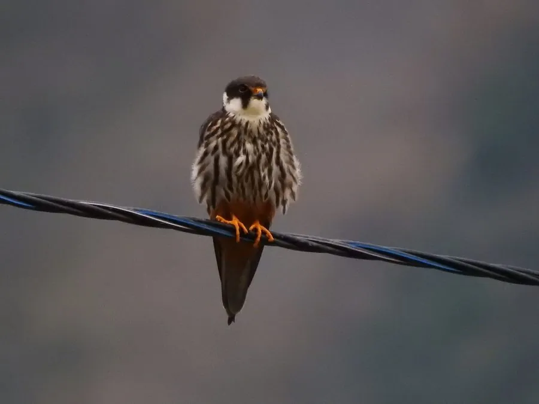

鸟类 · 动物界
燕隼 Falco subbuteo

体形小巧、翅膀尖长的林地猛禽，飞行速度极快，常在黄昏追捕蜻蜓、燕子和雨燕等空中飞虫与鸟类。
- 分类
- 门脊索动物门纲鸟纲目隼形目科隼科属隼属
- 栖息环境
- 林缘、草原、农田与湿地边缘，常借用其他鸟类的旧巢繁殖
- 地理分布
- 欧亚大陆和非洲，中国北方、西北和东北有繁殖，冬季南迁
- 保护级别
- IUCN 无危（LC）；中国国家二级保护动物
物种志
燕隼体长 28–36 cm，体重 130–340 g，翼展 68–84 cm。成鸟背部深灰褐色，胸部白色并带黑色纵纹，腹部和腿部羽毛呈红褐色，脸部有黑色髭纹，眼圈橙黄，喙短而钩曲。它的翅膀尖长如燕，飞行时像一只放大的燕子，速度极快。
燕隼广泛分布于欧亚大陆和非洲，中国北方、西北和东北有繁殖种群，冬季南迁到非洲和南亚。它们栖息在林缘、草原、农田和湿地边缘，喜欢在黄昏捕食蜻蜓、飞蛾等大型昆虫，也捕食燕子和雨燕等飞行鸟类。燕隼常借用喜鹊、乌鸦的旧巢繁殖，每窝产卵 2–4 枚，孵化约 28–30 天。由于迁徙路线上的栖息地变化，其种群值得关注，目前被列为无危物种，中国将其列为国家二级保护动物。
形态与习性
- 食性蜻蜓、飞蛾等大型昆虫，也捕食燕子和雨燕
- 体长28–36 cm
- 体重130–340 g
- 翼展68–84 cm
- 繁殖每窝 2–4 枚卵，孵化约 28–30 天
- 飞行翅膀尖长如燕，速度极快
- 寿命野外约 10 年
趣味知识
- 燕隼常在黄昏出动，捕食蜻蜓、飞蛾等大型昆虫。
- 它的翅膀尖长如燕，飞行姿态和速度都像一只放大的燕子。
- 燕隼自己不筑巢，常借用喜鹊或乌鸦的旧巢繁殖。
- 燕隼的腿部羽毛呈红褐色，像穿了一条红色短裤。